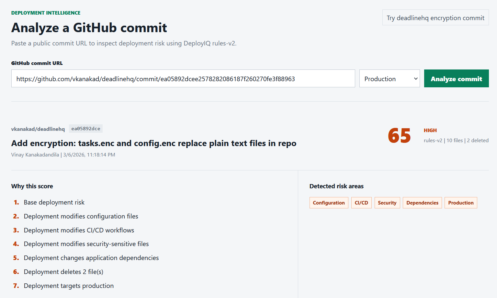
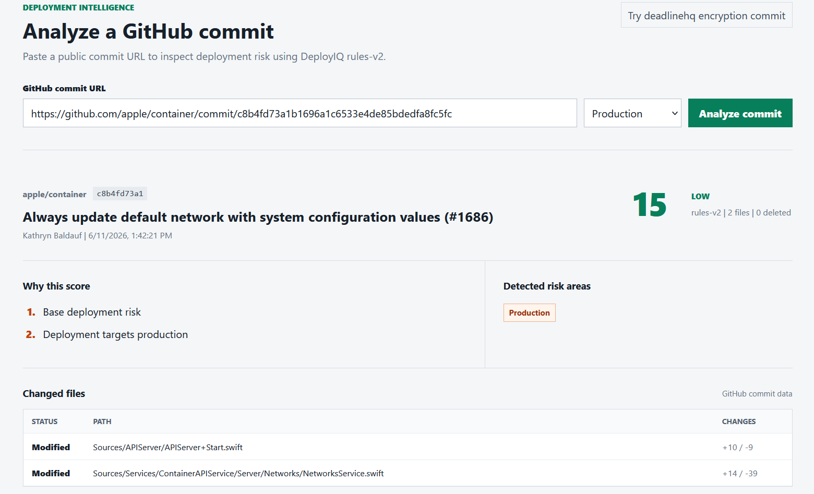

Deployment intelligence platform
DeployIQ
Built an event-driven deployment risk analyzer that scores GitHub commits before production rollout. The platform detects database, configuration, CI/CD, security, dependency, and deletion risk signals, then explains each score through a live public analyzer. The backend uses durable event consumption, PostgreSQL risk persistence, health and readiness checks, and automated unit and integration testing.
